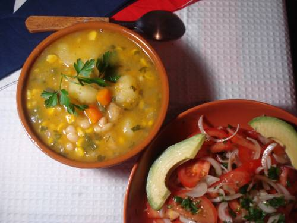
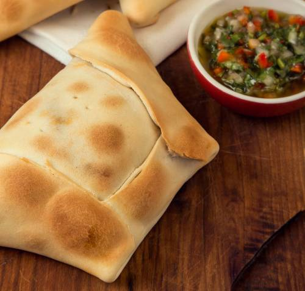

Best Chilean Dishes
A comprehensive and unbiased guide from a Chilean currently living abroad
Completos

Why have a hotdog with just ketchup when you can have this?
- Delightful combination of avocado, sauerkraut, tomatoes, and mayonnaise
- A hearty explosion of flavour
- Leaves you feeling satisfied (and maybe a little full)
Porotos Granados
A Chilean favourite
- White bean, corn, and squash stew
- Perfect for cold and rainy days
- Pairs well with Chilean salad (tomato and onion with a sprinkle of olive oil)
Empanadas Chilenas
Timeless classic filled with flavours of the cordillera
- Home in a hot savoury pastry
- Comes in a variety of flavours, including meat, seafood, and cheese
- Not just perfect for Dieciocho, but year-round
Ready to try out these incredible dishes? Lean more about Chile and start planning your trip today!